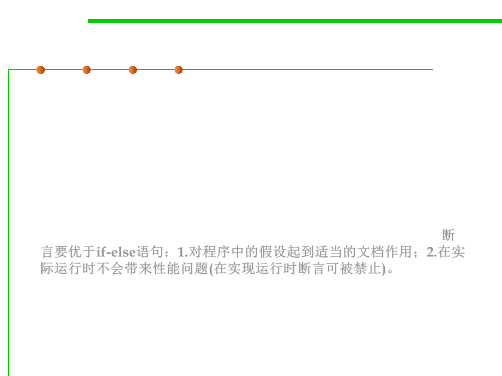

What is assertion?
7.3 Assertions and Defensive Programming
▪ Each assertion contains a boolean expression that you believe will
be true when the program executes.
▪ If it is not true, the JVM will throw an AssertionError.
▪ This error signals you that you have an invalid assumption that
needs to be fixed.
▪ Assertion is much better than using if-else statements, as it
serves as proper documentation on your assumptions, and it does
not carry performance liability in the production environment. 断
言要优于if-else语句：1.对程序中的假设起到适当的文档作用；2.在实
际运行时不会带来性能问题(在实现运行时断言可被禁止)。